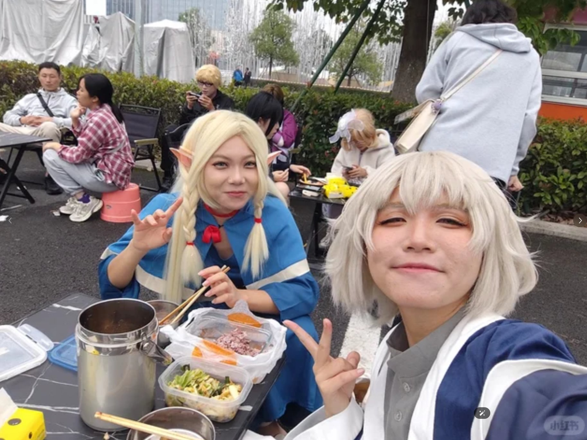
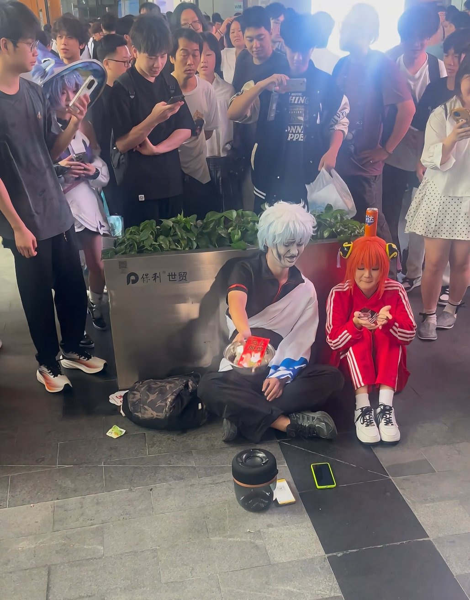
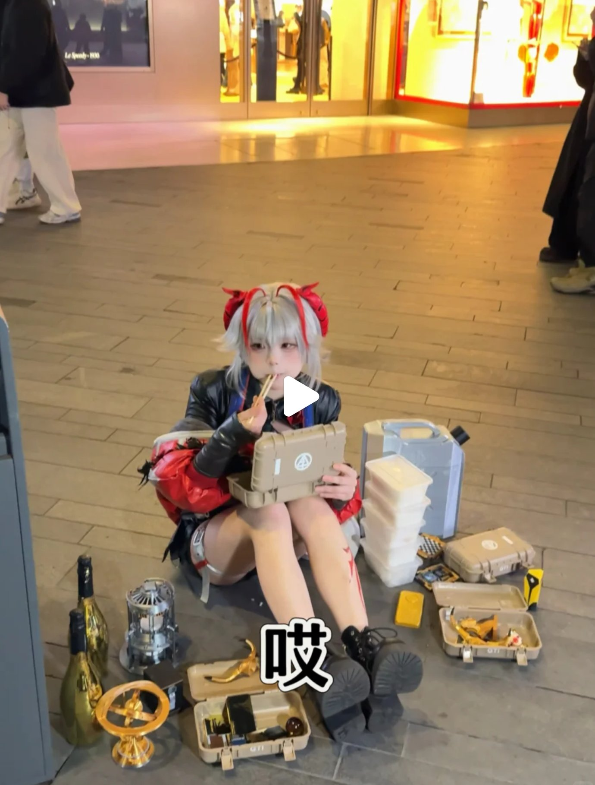
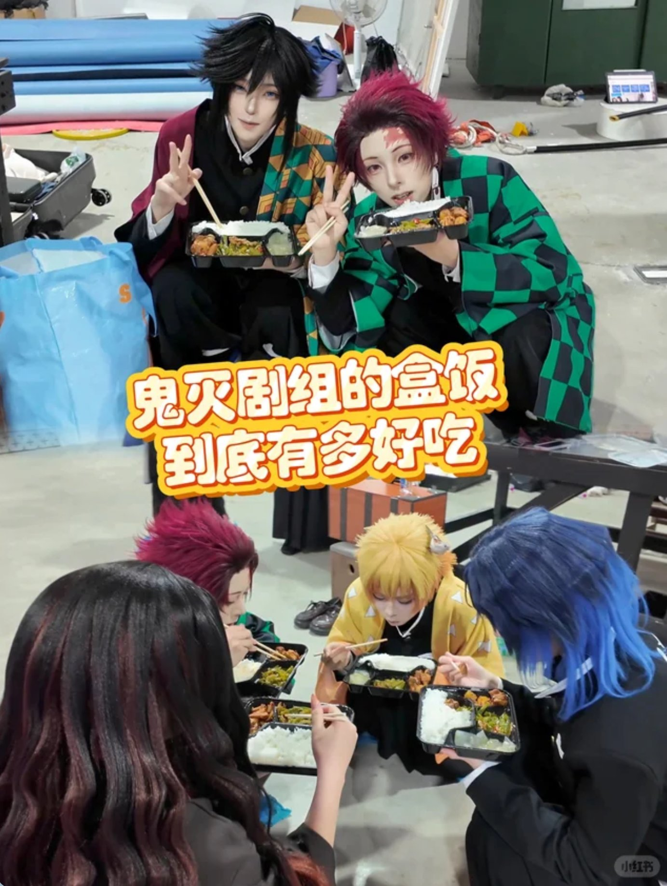

一句话讲清楚
在你的线下活动里，给米饭联盟一个小摊位，玩家端着电饭煲讨米、围炉吃饭，产出有梗的传播内容，全国攒到一起，深圳收官。
米饭联盟是天美的玩家社群组织。这次我们想借各地线下活动的现场，落地一套统一的「集米」互动：米饭 coser 端着电饭煲到处「讨米」、围着电饭煲吃饭，趣味、好拍、易参与，给活动现场添个有梗的打卡点，也帮我们产出一波传播素材。
不排队、不淘汰、不卡门槛，进场顺手就能玩。
各城讨来的米，最终都会汇聚到天美周年庆深圳站：12 城代表色的米倒进现场的米饭联盟巨型 Logo 灯箱装置，填满后亮灯、宣布开席，全国米饭在深圳「吃同一顿饭」，作为整件事的收官与高光画面。
深圳站的详细落地另有方案，本稿不展开。各位项目同事只需关注：在你的城市站，把「讨饭集米」这个动作落地、拍好即可。
每个城市站现场，围绕「集米」分三步执行与拍摄。时间不强求精确，按现场节奏走，核心是把这三段画面拍到、拍好。



